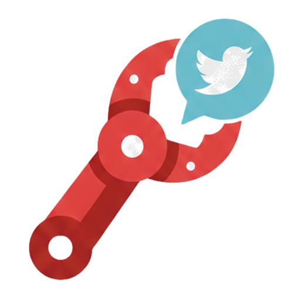

Claw Post WebMCP DemoPost to social media from AI agents via your desktop Chrome browser
This is a public demo showing how clawpost.net integrates with the WebMCP API. Claw Post lets AI agents post from your already logged in desktop Chrome via a paired browser extension. This demo registers WebMCP tools that ChatGPT and other AI assistants can call to create posts on your behalf.
Note: The skill slug is always @daydreamnationtechlabs/clawpost (not a short name).
There is a different product at clawpost.dev. This is not that.
Paste your Claw Post API key below. Get one at clawpost.net after installing the Chrome extension.
chrome://flags/#enable-webmcp-testing and enable the flag. Restart Chrome.
Or use ChatGPT's in-app browser which has WebMCP built in.
Test the tools directly without an AI agent: